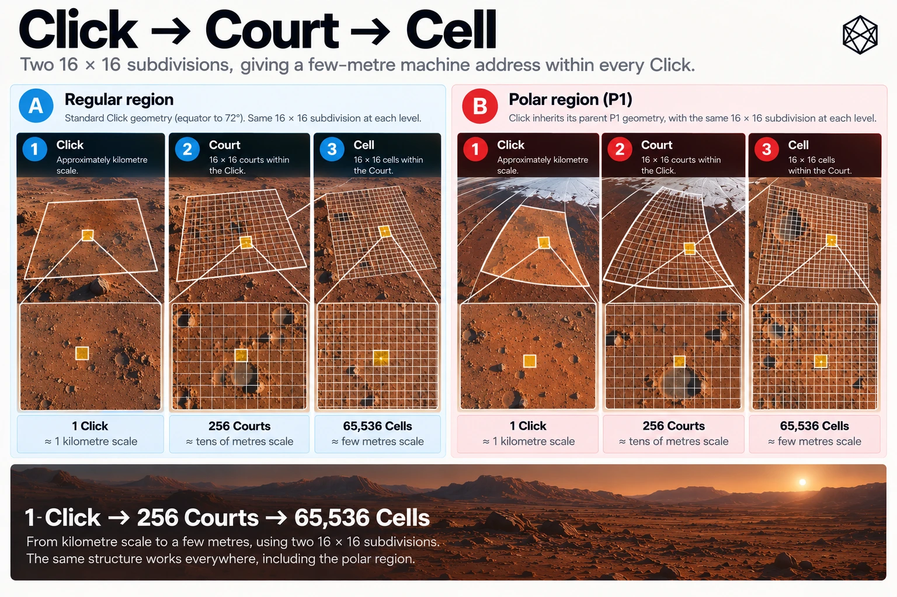
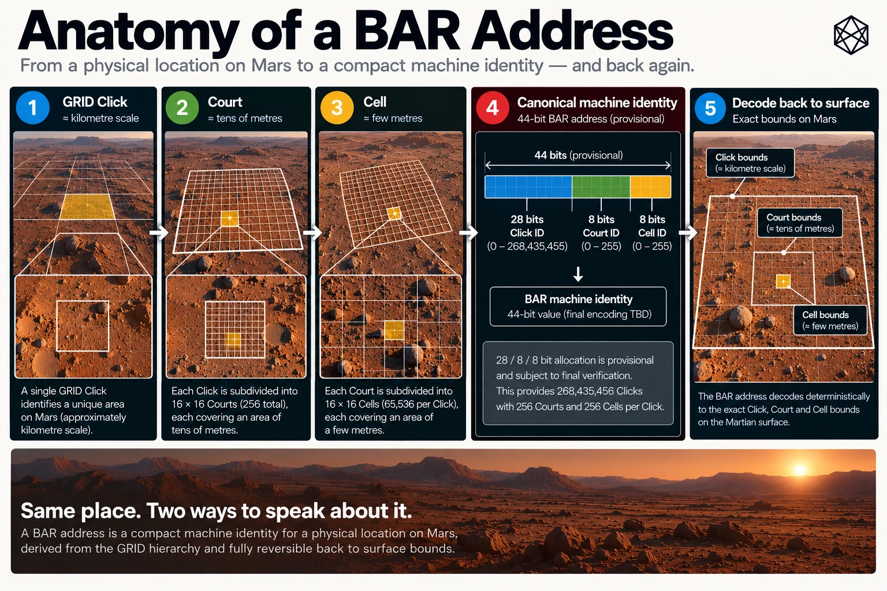

G - Mars BAR — Address Reference
Court and Cell Geometry, Canonical Machine Identity and Reversible Encoding
Mars GRID provides a persistent geographic hierarchy from the whole planet down to Click. At approximately kilometre scale, Click is an effective unit for organising locations, but it is too large to serve as the destination of an emergency responder, an autonomous delivery vehicle or a maintenance technician looking for a particular piece of equipment.
Those tasks require finer addressing.
Mars BAR — Binary Address Reference — extends the GRID hierarchy beneath Click without changing the underlying geography. Every Click is divided into Courts, and every Court into Cells. The resulting Cell is a small, persistent reference area, typically a few metres across.
BAR gives each such area a deterministic machine identity. It does not depend on a registry of assigned addresses, local settlement names, institutional control or a particular language.
The geometry, the machine identity and the human interface are separate responsibilities. BAR defines the first two. Triplet, described in Appendix H, addresses how the same location can be represented in human language.
This appendix records the BAR address structure, its encoding, its exact inverse and its relationship to the parent GRID hierarchy.
G.1 — From GRID to BAR

The complete spatial hierarchy is:
Mars → Quad → Zand → Province → Sector → Tile → Click → Court → Cell
GRID defines the hierarchy through Click. BAR adds the final two levels.
The distinction is functional. GRID organises areas at a range of geographic scales. BAR identifies a fine surface destination within an already established Click.
Each of the 193,557,552 GRID Clicks is independently subdivided in exactly the same structural manner:
- One Click contains 256 Courts, arranged in a 16 × 16 array.
- One Court contains 256 Cells, also arranged in a 16 × 16 array.
- One Click therefore contains 65,536 Cells.
The number of Cells does not vary between regular and polar Clicks. Their physical dimensions and shapes may vary, but the addressing structure remains constant.
G.1.1 — BAR reference hierarchy

Level | Parent | Subdivision | Units per parent |
|---|---|---|---|
Click | GRID Tile | Defined by GRID or P1 | Variable by GRID geometry |
Court | Click | 16 rows × 16 columns | 256 |
Cell | Court | 16 rows × 16 columns | 256 |
Across one Click:
16 × 16 × 16 × 16 = 65,536 Cells
BAR does not introduce further subdivisions beneath Cell in its version-one architecture.
That stopping point is deliberate. A few-metre spatial reference is useful for ordinary operational addressability, while precision surveying, navigation, robotics and three-dimensional facility addressing can continue to use their own systems.
A Cell identifies a patch of surface. It does not necessarily identify one particular object within that patch.
G.2 — Court and Cell Geometry
BAR divides the actual containing Click, using its defined angular boundaries in MRR-1.
The subdivision is independent of local settlement infrastructure. It does not require roads, buildings, plotted land parcels or named features.
G.2.1 — Court subdivision
Each Click is divided into sixteen equal latitude rows and sixteen equal longitude columns.
Rows run from the equatorward edge towards the poleward edge. Columns run from the western edge towards the eastern edge.
Unlike the one-based indices used in GRID identifiers, BAR uses zero-based indices.
For Courts:
CourtRow = 0…15
CourtCol = 0…15
The first Court lies at row 0, column 0. The last index position is row 15, column 15.
A Court's spatial extent is determined entirely by its parent Click and its two indices.
G.2.2 — Cell subdivision
Each Court is subdivided again into sixteen equal latitude rows and sixteen equal longitude columns.
The orientation is identical:
CellRow = 0…15
CellCol = 0…15
The Cell's location is determined by its Court and these two additional indices.
This creates four zero-based indexing fields beneath Click:
Field | Range | Orientation |
|---|---|---|
CourtRow | 0–15 | Equatorward to poleward |
CourtCol | 0–15 | West to east |
CellRow | 0–15 | Equatorward to poleward within Court |
CellCol | 0–15 | West to east within Court |
These values are structural position indices, not arbitrary address numbers.
G.2.3 — The combined 256 × 256 array
The two subdivisions can also be treated as a single fine grid across the parent Click.
Define:
FineRow = 16 × CourtRow + CellRow
FineColumn = 16 × CourtCol + CellCol
Each combined index ranges from 0 to 255.
The inverse is equally straightforward:
CourtRow = floor(FineRow / 16)
CellRow = FineRow mod 16
CourtCol = floor(FineColumn / 16)
CellCol = FineColumn mod 16
Thus the four Court/Cell indices and the two fine indices describe exactly the same subdivision.
This combined representation is useful for coordinate-to-Cell conversion. The hierarchical representation is useful for constructing and decoding the machine address.
G.3 — Exact Angular Cell Ownership
BAR inherits GRID's frozen MRR-1 reference, together with Boundary Ownership Rule B1 and Numerical Conformance Rule N1.
Every Cell is an angular subdivision of its actual containing Click.
Let the parent Click have absolute-latitude boundaries u0 and u1, and an east-positive longitude interval from w to e.
For a valid point within the Click, the fine indices are:
FineRow = floor[256 × (u − u0) / (u1 − u0)]
FineColumn = floor[256 × (λ − w) / (e − w)]
Here u is absolute latitude and λ is the normalised longitude expressed within the containing Click's longitude interval.
The resulting indices identify the Cell through the Court and Cell row/column decomposition described above.
G.3.1 — Boundary ownership
BAR uses the same directional ownership conventions as GRID.
Longitude boundaries are west-inclusive and east-exclusive. A point on an exact internal boundary belongs to the immediately eastern Cell.
Latitude boundaries are equatorward-inclusive and poleward-exclusive. A point on an exact internal boundary belongs to the more poleward Cell.
At a southern location, poleward means towards the South Pole. The rule is based on absolute latitude, not on whether the numerical signed latitude increases or decreases.
The exact geographic poles have a separate canonical ownership convention, discussed in Section G.8.
The boundaries are mathematical. Implementations must not shift a point across an exact edge by applying an arbitrary tolerance.
Measurement uncertainty remains a separate question. A rover's reported position may be uncertain enough to overlap several Cells, even though any specified exact coordinate belongs to one.
G.3.2 — Angular size and physical size
For a regular GRID Click, the angular extent is one arcminute in latitude and one arcminute in longitude.
BAR divides each dimension into 256 equal parts. Each Cell therefore spans:
1/15,360° of latitude
and
1/15,360° of longitude.
These are exact angular increments for a regular Click.
Their physical dimensions are not constant across Mars. Longitude distance decreases with latitude, and terrain and reference-surface geometry affect the relation between angular boundaries and actual ground.
A regular BAR Cell is therefore approximately a few metres across, but BAR does not define it as a fixed square of a particular number of metres.
The angular bounds are authoritative for identity. Physical dimensions are derived properties.
G.4 — Canonical BAR Machine Identity

BAR uses compact binary integers rather than a long concatenation of textual row and column fields.
The identity is built from three components:
- The global GRID Click ordinal.
- The local Court position.
- The local Cell position.
The canonical machine payloads are called Click28, Court36 and Cell44.
The numbers indicate their unsigned bit widths.
G.4.1 — Click28
Every GRID Click has a unique global ordinal, as defined in Appendix E.
For MGRID:1 there are:
193,557,552 valid Click ordinals
The populated range is:
0…193,557,551
These values fit within an unsigned 28-bit integer.
The remaining possible values in the 28-bit range, from 193,557,552 through 268,435,455, are reserved.
Click28 is therefore a compact representation of one complete GRID Click lineage. It does not replace the hierarchy's geographic meaning.
G.4.2 — CourtCode
Within a Click, the sixteen possible row indices and sixteen possible column indices each require four bits.
They are packed into one eight-bit value:
CourtCode = (CourtRow << 4) | CourtCol
The notation << 4 means shift left by four binary positions. The | operation combines the non-overlapping fields using bitwise OR.
The upper four bits hold CourtRow. The lower four bits hold CourtCol.
This produces a value from 0 through 255.
For example:
CourtRow = 5
CourtCol = 10
gives:
CourtCode = 0x5A
The code is a positional representation. It is not a separately assigned address.
G.4.3 — Court36
Court36 combines the 28-bit Click ordinal with the eight-bit CourtCode:
Court36 = (Click28 << 8) | CourtCode
The resulting unsigned integer occupies 36 bits.
Its first 28 payload bits identify the GRID Click. Its final eight identify the Court.
The structure is reversible. No database lookup is required to separate the two fields.
G.4.4 — CellCode
The Cell indices are packed in exactly the same way:
CellCode = (CellRow << 4) | CellCol
Again, the upper four bits hold the row and the lower four hold the column.
CellCode ranges from 0 through 255.
G.4.5 — Cell44
The complete Cell identity is:
Cell44 = (Click28 << 16) | (CourtCode << 8) | CellCode
Equivalently:
Cell44 = (Court36 << 8) | CellCode
This produces a 44-bit unsigned payload.
G.4.6 — Bit allocation
Payload | GRID Click bits | Court bits | Cell bits | Total |
|---|---|---|---|---|
Click28 | 28 | — | — | 28 |
Court36 | 28 | 8 | — | 36 |
Cell44 | 28 | 8 | 8 | 44 |
No language, region colour, institution, ownership category or settlement identifier is hidden in these fields.
The bit allocation serves one purpose: preserving and refining the canonical spatial identity.
G.5 — Exact Inverse Decoding
Because Cell44 is formed from fixed-width, non-overlapping fields, decoding is an exact inverse operation.
Given a valid Cell44 payload:
Click28 = Cell44 >> 16
CourtCode = (Cell44 >> 8) & 255
CellCode = Cell44 & 255
Here >> shifts right and & applies a bit mask.
The row and column indices are then recovered:
CourtRow = CourtCode >> 4
CourtCol = CourtCode & 15
CellRow = CellCode >> 4
CellCol = CellCode & 15
These operations recover the original integers without loss.
A decoder must also validate that Click28 belongs to the populated MGRID:1 ordinal range.
A 44-bit value is not automatically a valid BAR Cell simply because it can be decomposed into fields. If its embedded Click ordinal is reserved, the complete Cell44 value is invalid.
G.5.1 — Recovering the GRID lineage
Once Click28 has been decoded, the inverse global GRID Click ordering recovers the complete canonical Click identifier.
The inverse traversal follows the authoritative Quad, Zand, Province, Sector, Tile and Click hierarchy, including P1's variable polar branching.
The reconstructed Click bounds, together with the decoded Court and Cell indices, then determine the Cell's exact angular extent.
This establishes the complete reversible path:
Cell44 → Click28 + CourtCode + CellCode → GRID Click lineage + local indices → Cell angular bounds
The inverse recovers the area represented by the address, not the precise measured coordinate originally used to generate it.
Multiple positions within the same Cell resolve to the same Cell44 identity. That is an intended property of spatial addressing.
G.6 — Worked Example: From Coordinate to Cell44
Consider the same illustrative Martian maintenance location used in Appendix E:
41.351°N, 68.421°E
For this worked example, the coordinate is treated as already expressed in MRR-1.
Appendix E established its canonical GRID Click:
MGRID:1:MARS/Q03/Z0506/P32/S24/T0405/C42
Its global Click ordinal is:
Click28 = 14,116,819
G.6.1 — Identify the parent Click
The regular GRID Click covers:
Dimension | Lower boundary | Upper boundary |
|---|---|---|
Latitude | 41°21′N | 41°22′N |
Longitude | 68°25′E | 68°26′E |
These intervals follow the stated B1 ownership rule.
The supplied coordinate lies within this Click.
G.6.2 — Find the fine indices
The coordinate lies 0.001° poleward of the Click's equatorward latitude boundary.
Across a total Click height of 1/60°, the fractional latitude position is:
0.001 ÷ (1/60) = 0.06
Multiplying by 256 and taking the floor:
FineRow = floor(15.36) = 15
The longitude lies 0.004333…° east of the Click's western edge. Its fractional position is 0.26.
Therefore:
FineColumn = floor(256 × 0.26) = 66
The position within the Click's combined fine array is:
FineRow 15, FineColumn 66
G.6.3 — Find the Court and Cell
Decomposing the fine indices into Court and Cell positions gives:
Field | Value |
|---|---|
CourtRow | 0 |
CourtCol | 4 |
CellRow | 15 |
CellCol | 2 |
The CourtCode is:
(0 << 4) | 4 = 4
The CellCode is:
(15 << 4) | 2 = 242
Their hexadecimal representations are:
CourtCode = 0x04
CellCode = 0xF2
These two one-byte fields identify the fine location within the parent Click.
G.6.4 — Construct Court36
The parent Click ordinal is 14,116,819.
Therefore:
Court36 = (14,116,819 << 8) | 4
The result is:
Court36 = 3,613,905,668
G.6.5 — Construct Cell44
The complete Cell payload is:
Cell44 = (14,116,819 << 16) | (4 << 8) | 242
The result is:
Cell44 = 925,159,851,250
This is the canonical 44-bit integer identity of the containing BAR Cell under the stipulated MGRID:1 and MRR-1 geometry.
It is not a coordinate. It is a uniquely reversible identifier of one defined surface-reference area.
G.6.6 — Worked identity summary
Component | Decimal value | Hexadecimal representation |
|---|---|---|
Click28 | 14,116,819 | 0xD767D3 |
CourtCode | 4 | 0x04 |
CellCode | 242 | 0xF2 |
Court36 | 3,613,905,668 | 0x0D767D304 |
Cell44 | 925,159,851,250 | 0x0D767D304F2 |
The 44-bit hexadecimal payload begins with a zero nibble in this example. That leading zero is significant when the payload is presented in its fixed-width form, even though ordinary hexadecimal integer notation may omit leading zeros.
G.7 — Tagged Compact Machine Frames
The raw payload identifies a Click, Court or Cell within a particular versioned BAR context.
For transport, BAR defines compact machine frames that include a four-bit kind tag.
The tag identifies whether the payload represents a Click, Court or Cell.
G.7.1 — Frame types
Address kind | Kind tag | Payload bits | Frame size | Hexadecimal digits |
|---|---|---|---|---|
Click | 1 | 28 | 4 bytes | 8 |
Court | 2 | 36 | 5 bytes | 10 |
Cell | 3 | 44 | 6 bytes | 12 |
The tag occupies the most significant four bits of the frame.
The complete frame integer is:
FrameInt = (Tag << PayloadWidth) | Payload
Frames use unsigned, big-endian byte ordering and fixed lengths determined by the tag.
G.7.2 — Worked machine frames
For the worked location in Section G.6:
Address kind | Tagged hexadecimal frame |
|---|---|
Click | 10D767D3 |
Court | 20D767D304 |
Cell | 30D767D304F2 |
The Cell frame is:
30D767D304F2
It contains six bytes:
30 D7 67 D3 04 F2
The initial high nibble 3 identifies the frame as a Cell address. The remaining 44 bits contain the complete Cell44 payload.
This is sufficient to recover the Click, Court and Cell integer fields when the correct protocol context is known.
It is not, by itself, a globally context-complete address.
G.7.3 — What the kind tag does not contain
The four-bit tag distinguishes address kinds. It does not identify:
- Mars rather than another world.
- BAR major version 1 rather than a future version.
- MGRID geometry version 1.
- The MRR-1 reference realisation.
- Any language or Triplet profile.
Those facts are part of the interpreting context.
A bare six-byte frame must therefore not be treated as universally meaningful without a compatible and authenticated protocol context. The same bytes could have another meaning under an incompatible future system.
BAR separates compact machine encoding from the information needed to interpret it correctly.
G.8 — Contextual Address Transport
The canonical contextual transport profile is BAR-JSON:1.
It carries the tagged machine frame alongside the explicit BAR system, MGRID geometry version, reference realisation and wire-format version.
G.8.1 — Required context
Field | Meaning | Worked example |
|---|---|---|
bar | BAR protocol and planetary version | BAR:1:MARS |
frame_hex | Tagged frame in uppercase hexadecimal | 30D767D304F2 |
mgrid | GRID geometry version | MGRID:1:MARS |
reference | Frozen civil reference realisation | MRR-1 |
wire | Contextual transport profile | BAR-JSON:1 |
For the worked Cell, the complete canonical contextual address is:
{"bar":"BAR:1:MARS","frame_hex":"30D767D304F2","mgrid":"MGRID:1:MARS","reference":"MRR-1","wire":"BAR-JSON:1"}
The contextual address is more verbose than the six-byte machine frame because it protects meaning across systems and versions.
The frame remains compact within a known protocol context. The contextual representation makes that context explicit.
G.8.2 — Canonical serialization
BAR-JSON:1 is deliberately restrictive.
It contains exactly five string-valued properties in alphabetical key order:
bar, frame_hex, mgrid, reference, wire
The canonical serialization uses ASCII-compatible UTF-8 without a byte-order mark, additional whitespace or extra properties. The hexadecimal frame has the exact required width and uses uppercase characters.
The parser must reject duplicate properties, unsupported versions, incorrect key order, malformed frames and invalid embedded Click ordinals.
These requirements may appear unnecessarily strict for an ordinary JSON message. Their purpose is to define one unambiguous machine representation, rather than allowing multiple superficially equivalent encodings to acquire different interpretations in different implementations.
A system may display the address more readably to a human, but the canonical machine serialization follows the defined profile.
G.9 — Decoding the Worked Cell
The previous sections constructed the Cell identity. The reverse operation demonstrates that nothing essential has been lost.
Start with the contextual address containing:
frame_hex = 30D767D304F2
The decoder first validates the context and frame structure.
The leading kind tag identifies a Cell frame. Removing it yields the 44-bit Cell payload:
925,159,851,250
G.9.1 — Extract the parent Click
Shift Cell44 right by sixteen bits:
Click28 = Cell44 >> 16
Result:
14,116,819
The inverse GRID Click ordering resolves that ordinal to:
MGRID:1:MARS/Q03/Z0506/P32/S24/T0405/C42
G.9.2 — Recover Court and Cell indices
Extract the CourtCode:
CourtCode = (Cell44 >> 8) & 255 = 4
Extract the CellCode:
CellCode = Cell44 & 255 = 242
Then split the fields:
Field | Recovered value |
|---|---|
CourtRow | 0 |
CourtCol | 4 |
CellRow | 15 |
CellCol | 2 |
The combined fine indices are recovered as:
FineRow = 16 × 0 + 15 = 15
FineColumn = 16 × 4 + 2 = 66
These are exactly the values obtained from the original coordinate.
G.9.3 — Recover the angular area
Using the reconstructed parent Click and its actual MRR-1 bounds, the decoder divides each angular dimension into 256 equal increments.
The resulting Cell is bounded approximately by:
Dimension | Lower boundary | Upper boundary |
|---|---|---|
Latitude, degrees north | 41.3509765625 | 41.3510416667 |
Longitude, degrees east | 68.4209635417 | 68.4210286458 |
The displayed repeating-decimal endpoints are rounded for readability; the mathematical boundaries are exact rational angular subdivisions.
The original coordinate — 41.351°N, 68.421°E — lies inside that Cell.
The inverse therefore recovers the correct area and full geographic ancestry. It does not recover the original coordinate to the same numerical precision, because the Cell represents a range of positions.
That is precisely what a spatial address is intended to do.
G.10 — Regular and Polar BAR Inheritance
BAR does not create a second polar tessellation.
Every BAR subdivision inherits the actual GRID Click in which it occurs.
In Regular GRID, Clicks have fixed angular dimensions of one arcminute by one arcminute. The BAR subdivision therefore uses the corresponding regular angular bounds.
In Polar GRID, P1 may produce Clicks with different longitudinal widths. Some are wedge-shaped, and their neighbours may meet through T-junctions inherited from higher GRID levels.
BAR divides those actual polar Click bounds into the same 16 × 16 Courts and 16 × 16 Cells per Court.
The numerical address structure is unchanged.
Property | Regular BAR | Polar BAR |
|---|---|---|
Parent | Regular GRID Click | P1 polar GRID Click |
Courts per Click | 256 | 256 |
Cells per Court | 256 | 256 |
Cells per Click | 65,536 | 65,536 |
Court and Cell indexing | Zero-based | Zero-based |
Machine identity | Click28/Court36/Cell44 | Click28/Court36/Cell44 |
Longitude widths | Derived from regular Click | Derived from actual P1 Click |
Boundary ownership | B1/N1 | B1/N1 plus exact-apex rule |
G.10.1 — The exact poles
The unique GRID apex Clicks are:
North Pole
MGRID:1:MARS/Q01/Z01N/P91/S21/T1001/C61
South Pole
MGRID:1:MARS/Q26/Z01S/P91/S21/T1001/C61
At either exact pole, longitude is canonicalised to 0° for indexing.
Within its apex Click, BAR assigns the exact pole:
FineRow = 255
FineColumn = 0
Decomposition yields:
Field | Exact apex value |
|---|---|
CourtRow | 15 |
CourtCol | 0 |
CellRow | 15 |
CellCol | 0 |
CourtCode | 0xF0 |
CellCode | 0xF0 |
The final fine latitude row includes the exact apex by special rule.
This is an extension of GRID's unique polar ownership, not an alternative to it. All twenty-four longitude wedges geometrically converge on the pole, but only the canonical Zone-01 apex lineage owns that physical point.
BAR inherits that decision.
The resulting Cell may be geometrically unusual. Its machine identity remains ordinary: a valid Click28 combined with one CourtCode and one CellCode.
G.11 — Global Capacity and Reserved Values
The global BAR capacity follows directly from the GRID Click count and the fixed subdivisions beneath each Click.
G.11.1 — Address population
Level | Count |
|---|---|
GRID Clicks | 193,557,552 |
Courts per Click | 256 |
Cells per Court | 256 |
Cells per Click | 65,536 |
Global Courts | 49,550,733,312 |
Global Cells | 12,684,987,727,872 |
The total number of distinct Cells is:
193,557,552 × 65,536 = 12,684,987,727,872
This is the mathematical address capacity of BAR:1. It is not a count of occupied locations, settlement assets, buildings or words in a Triplet vocabulary.
G.11.2 — Valid payload ranges
Payload | Bit width | Valid decimal range |
|---|---|---|
Click28 | 28 | 0–193,557,551 |
Court36 | 36 | 0–49,550,733,311 |
Cell44 | 44 | 0–12,684,987,727,871 |
These populated ranges are smaller than the full unsigned ranges implied by their bit widths because the GRID Click field contains reserved values.
Payloads containing an invalid or reserved Click ordinal must be rejected, even where their overall numeric value fits within 28, 36 or 44 bits.
Zero is valid at every level. It is not a null marker or an unassigned value.
G.12 — Conformance and Invalid Inputs
BAR's machine representation is deliberately simple enough to reproduce in independent software implementations, but that reproducibility depends on consistent validation.
A conforming implementation must enforce the specified integer ranges, field widths, frame kinds, version context and GRID ancestry.
G.12.1 — Principal rejection conditions
Condition | Required treatment |
|---|---|
Negative payload integer | Reject |
Fractional payload value | Reject |
Boolean supplied as integer payload | Reject |
Payload exceeds unsigned width | Reject |
Embedded Click ordinal is reserved | Reject |
Court or Cell index outside 0–15 | Reject |
Unknown frame kind tag | Reject |
Frame byte length inconsistent with kind | Reject |
Lowercase or incorrect-width canonical frame hexadecimal | Reject |
BAR-JSON:1 has missing, duplicate or extra properties | Reject |
Contextual version or reference is unsupported | Reject |
Coordinate source frame is missing or ambiguous | Reject rather than assume MRR-1 |
Exact boundary ownership differs from B1/N1 | Nonconforming |
Decoded GRID Click path differs from the canonical ordinal inverse | Nonconforming |
No implementation should silently truncate an oversized value, reinterpret a signed integer, substitute a missing coordinate datum or coerce a malformed contextual address into a different canonical meaning.
G.12.2 — Required round trips
At minimum, independent implementations should demonstrate:
GRID path → Click28 → GRID path
Click28 + Court indices → Court36 → original fields
Click28 + Court and Cell indices → Cell44 → original fields
Cell44 → tagged frame → Cell44
Cell44 → BAR-JSON:1 → Cell44
MRR-1 coordinate → Cell44 → containing angular bounds
The integer and frame operations should reproduce the original values bit-for-bit.
The final coordinate operation has a different expectation. It must recover the containing area, not the exact original measurement.
All such tests should include boundary cases, both polar apexes, reserved values and invalid inputs. Cross-language equivalence is particularly important because a common address ceases to be useful when two otherwise valid systems interpret the same bytes differently.
G.13 — What BAR Does and Does Not Identify
BAR is a surface-addressing system. It provides a stable reference to a small angular patch of Mars.
It does not claim that a particular person, vehicle or asset permanently occupies that patch. An equipment registry may associate an asset with a Cell, but the identity of the asset remains a separate record.
Nor does BAR identify height or depth. Two facilities situated above and below each other may share a BAR Cell because the address represents the same two-dimensional surface-reference footprint.
Additional elevation, floor, tunnel or facility-level information can be attached through separate systems when needed.
BAR also does not calculate a safe route to its destination. Terrain, obstacles, hazards and access permissions can make a geometrically nearby Cell operationally difficult to reach.
Likewise, BAR does not grant property rights, define a jurisdiction or impose a settlement address. A future Martian may use a conventional street and building address while the underlying applications retain a BAR Cell for common reference.
These limitations are deliberate. The location layer should identify where a destination lies without pretending to determine everything that exists, happens or is permitted there.
G.14 — Relationship to Triplet
BAR's canonical machine identity is independent of the human language used to communicate it.
A Cell44 integer is unambiguous to a computer, but it is not an attractive everyday spoken address. People are more likely to confuse, misremember or mishear a long numeric identifier than a carefully designed verbal representation.
Triplet provides that verbal interface.
Its three-word form is resolved against the underlying BAR identity, while the M3B language architecture governs how words are classified and assigned.
Crucially, the geometry does not depend on the vocabulary.
A future English profile may revise a word assignment. Another language profile may use entirely different words. Human-factors testing may establish better pronunciation or error-recovery practices.
None of those changes should move the underlying Cell or alter its canonical Cell44 identity.
BAR provides the stable machine reference. Triplet provides one way for humans to communicate it.
Appendix H describes that language layer and its design constraints in more detail.
G.15 — Protocol Status and Reference Integrity
The BAR:1 machine architecture is an author-ratified design supported by local mathematical, encoding and interoperability checks.
Its core identities, Court/Cell geometry, packing rules, tagged frames and contextual transport have been specified for independent implementation.
That does not mean every surrounding technical and operational question has been closed.
In particular, independently authenticated physical transformations from modern Mars coordinate sources into the frozen MRR-1 reference remain a separate verification requirement. Exact mathematical membership under stipulated MRR-1 inputs should not be presented as independently certified physical-coordinate accuracy.
Third-party conformance review, release packaging, operational validation and long-term stewardship likewise remain separate from the design itself.
This appendix describes the version-one BAR architecture. The controlled Matlas Protocol is the appropriate home for executable reference implementations, canonical test vectors, machine-readable schemas, release hashes and formal interoperability evidence.
A future geometry-breaking change cannot silently reinterpret existing BAR addresses. Because Cell44 embeds the MGRID Click ordinal, compatibility depends upon preserving both the GRID geometry and its ordinal mapping under the declared version context.
The essential principle is persistence: an address must continue to refer to the same defined patch of Mars under the version in which it was created.
G.16 — BAR Reference Summary
Property | Version-one definition |
|---|---|
Protocol | BAR:1 |
Parent geography | MGRID:1 |
Civil reference | MRR-1 |
Address hierarchy | Click → Court → Cell |
Court array | 16 × 16 |
Cell array per Court | 16 × 16 |
Cells per Click | 65,536 |
Global Cells | 12,684,987,727,872 |
Court/Cell indices | Zero-based, 0–15 |
Fine indices per Click | 0–255 in each dimension |
Click identity | Click28 |
Court identity | Court36 |
Cell identity | Cell44 |
Tagged Click frame | 4 bytes |
Tagged Court frame | 5 bytes |
Tagged Cell frame | 6 bytes |
Contextual transport | BAR-JSON:1 |
Boundary rules | B1 and N1 |
Polar treatment | Inherits actual P1 Click geometry |
Exact-pole treatment | Unique apex lineage; FineRow 255, FineColumn 0 |
Human language interface | Triplet, separately specified |
Vertical addressing | Outside version-one BAR |
BAR completes the fine-addressing architecture beneath GRID.
It gives every valid Click an identical structural subdivision into Courts and Cells, even where the parent Click's physical geometry differs. It combines the global Click ordinal with compact local indices, producing a machine identity that can be encoded, transmitted, decoded and reconstructed deterministically.
The full GRID hierarchy remains recoverable. The fine angular area remains recoverable. The result does not depend on a settlement name, online allocation service or chosen human language.
One Cell can therefore support many different uses: a destination for emergency response, a location for an equipment record, a spatial reference in a contract, an entry in a scientific database or a place identified by a future Martian address.
The applications may change. The reference stays.
GRID tells us which part of Mars. BAR tells us which few metres. Triplet gives us a way to say it.